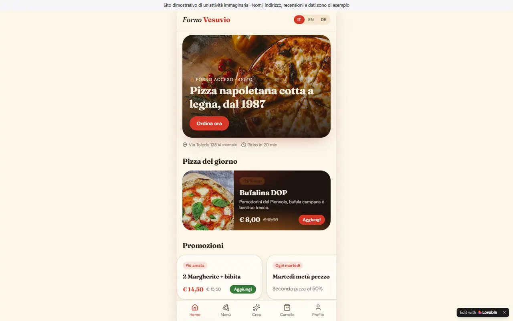
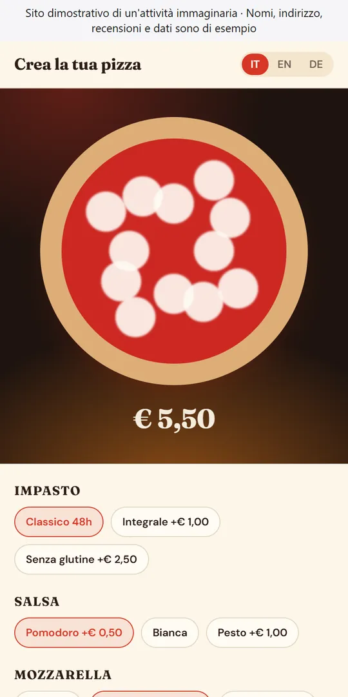
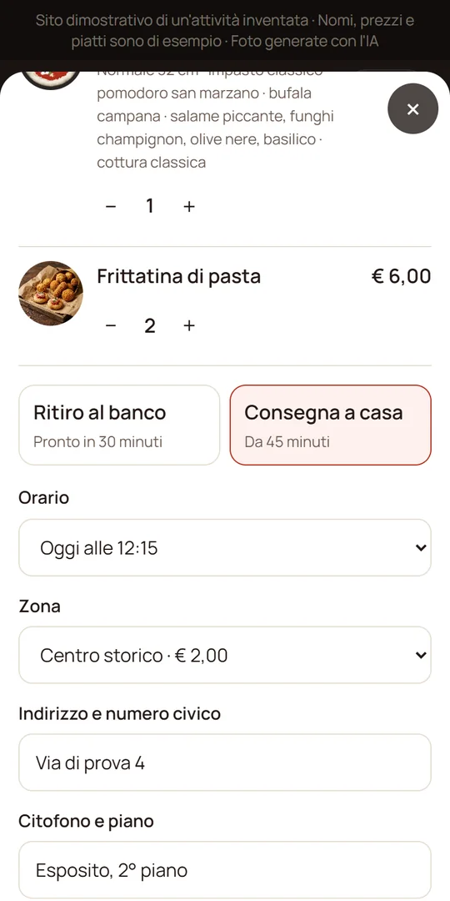
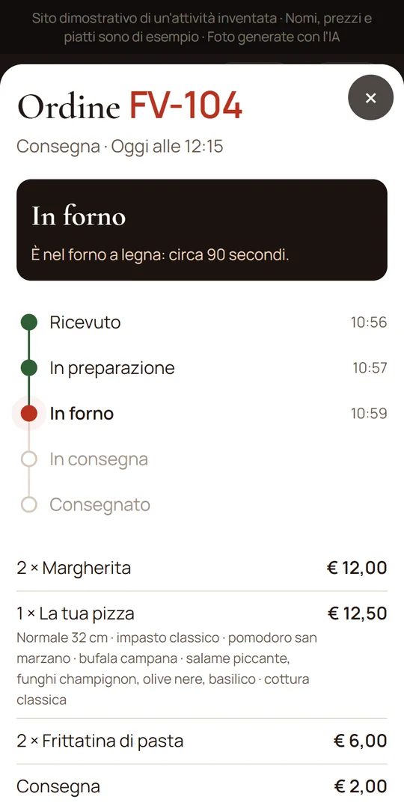
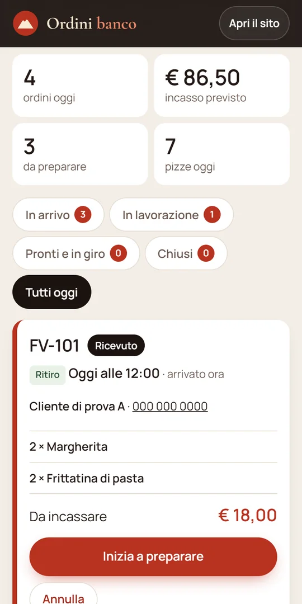

Home / Portfolio / Forno Vesuvio
Sito per ordinare · PizzeriaForno Vesuvio
Sito per ordinare da una pizzeria a legna di Napoli: il cliente compone la sua pizza e la vede prendere forma, ordina per il ritiro o la consegna e segue lo stato. Il titolare gestisce tutto da un pannello.
Tipo · Sito per telefono e computerFunzioni · menu, componi la pizza, ordini, pannello del bancoStato · Demo online, attività inventata

Come si usa
Passo passo
- Passo 1Apri il sitoSubito si vede se il forno è acceso, la pizza del giorno e le due strade: menu o pizza su misura.

- Passo 2Scegli dal menuClassiche, speciali, fritti e bevande, con la ricerca e il filtro per allergeni.

- Passo 3Componi la tua pizzaImpasto, misura, base, formaggio e fino a otto ingredienti. Ognuno cade sulla pizza e il prezzo cambia subito.

- Passo 4Ritiro o consegnaGli orari seguono i turni del locale, la consegna costa in base alla zona, i dati mancanti si vedono subito.

- Passo 5Segui l'ordineNumero d'ordine e stato che cambia sul telefono: ricevuto, in preparazione, in forno, in consegna.

- Passo 6Il banco riceve tuttoIl titolare vede gli ordini del giorno, li fa avanzare e segna gli ingredienti finiti.

Cosa fa
Le funzioni della demo
- Componi la tua pizzaStrati disegnati che si posano sulla base, riepilogo e prezzo dal vivo.
- Menu con allergeniRicerca, categorie e filtro: con il glutine resta l'impasto dedicato.
- Orari dei turniFasce di 15 minuti dentro gli orari di apertura, lunedì chiuso.
- Stato dell'ordineIl cliente lo vede cambiare mentre il banco lavora.
- Pannello del bancoOrdini del giorno, incasso previsto, cambio di stato con un tocco.
- Ingredienti finitiSpenti dal pannello, spariscono dalla pizza su misura.
Sono demo, non clienti. Le attività di queste demo non esistono: nomi, prezzi e dati sono di esempio. Le foto di Forno Vesuvio sono generate con l'IA; gli ingredienti di "Componi la tua pizza" sono disegnati da noi. I lavori per clienti veri li mostriamo in call, con il loro permesso.
Ti serve qualcosa di simile?
In call ti mostriamo cosa si può costruire per te.